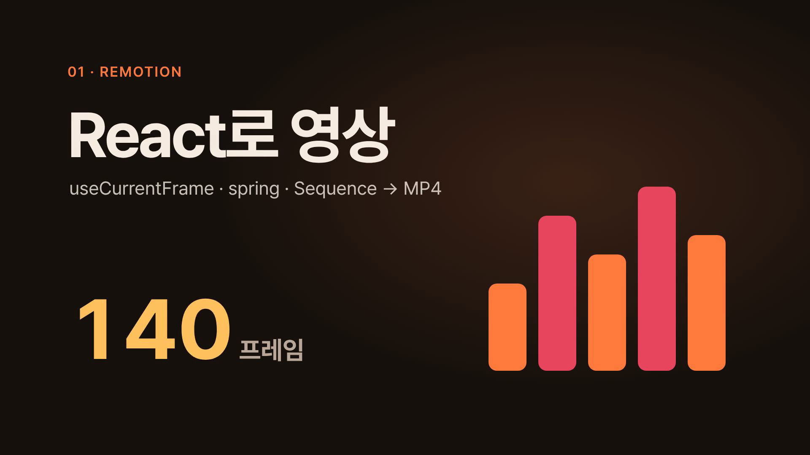
01Remotion
React 컴포넌트를 프레임 단위로 렌더링해 MP4로 만드는 영상

React 컴포넌트를 프레임 단위로 렌더링해 MP4로 만드는 영상
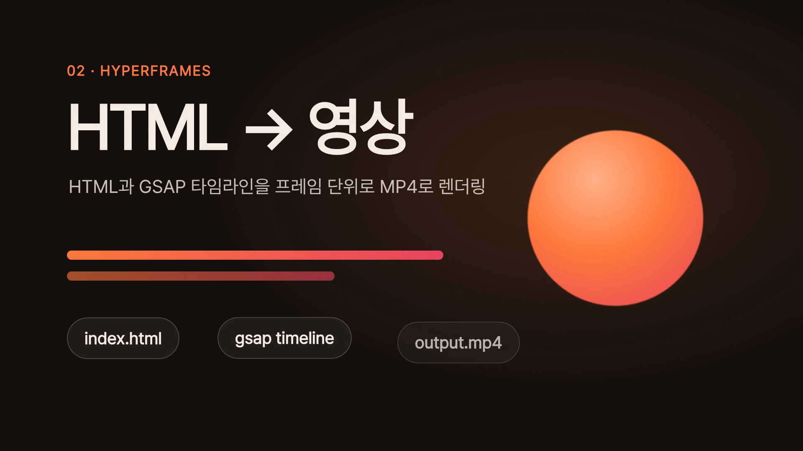
HTML+GSAP 타임라인을 프레임 단위로 캡처해 MP4로 렌더링

createTimeline과 stagger(grid)로 96개 타일이 파도처럼 움직이는 타임라인
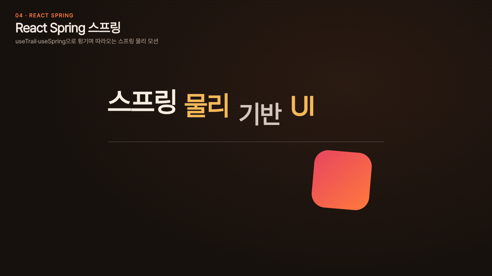
useTrail·useSpring으로 튕기며 따라오는 스프링 물리 모션

WebGL 스프라이트 3,000개를 가산 블렌딩으로 매 프레임 회전

Perlin noise 흐름장을 따라 입자 1,400개가 궤적을 그리는 제너러티브 아트
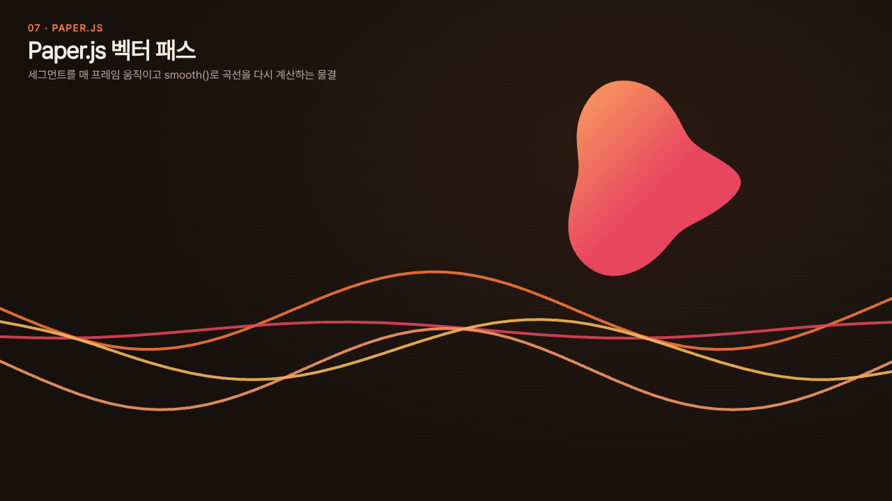
세그먼트를 매 프레임 옮기고 smooth()로 베지어를 다시 계산하는 벡터 물결
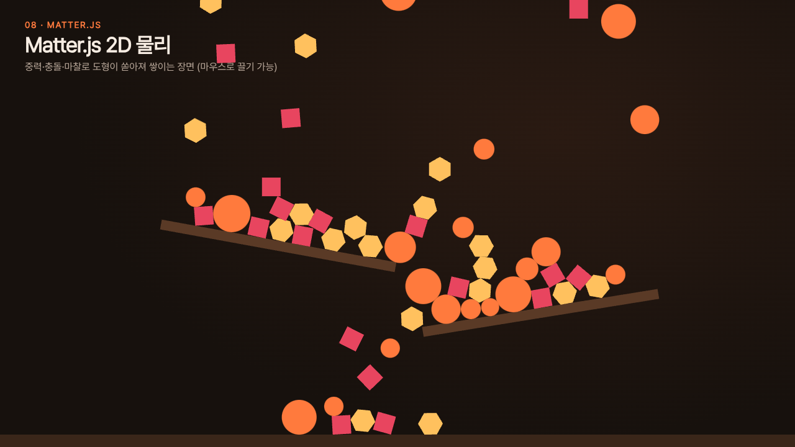
중력·충돌·마찰로 도형 160개가 경사판에 쏟아져 쌓이는 2D 물리
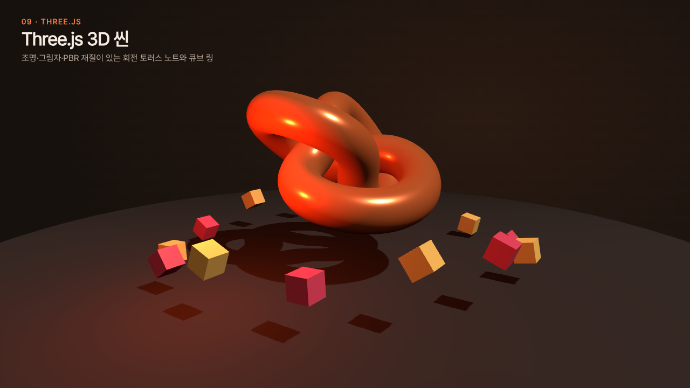
조명·그림자·PBR 재질의 토러스 노트와 회전 큐브 링 3D 씬

WASM 물리 엔진으로 공·상자 90개의 낙하·경사면 충돌을 계산하고 Three.js로 표시
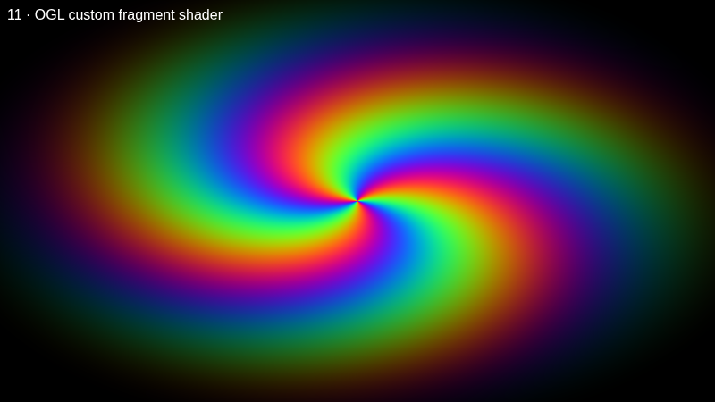
OGL 최소 WebGL로 만든 커스텀 프래그먼트 셰이더(회전 스파이럴).

tsParticles slim: 120개 파티클, 링크선, 마우스 hover 밀어내기.
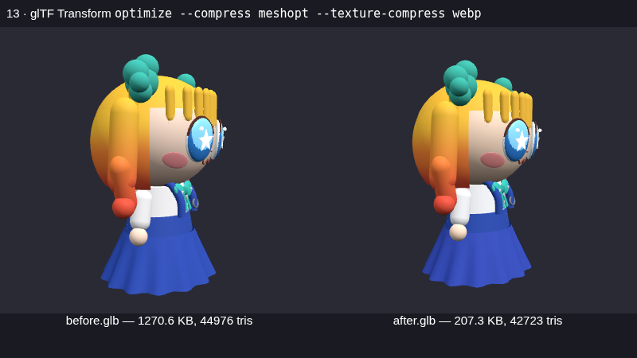
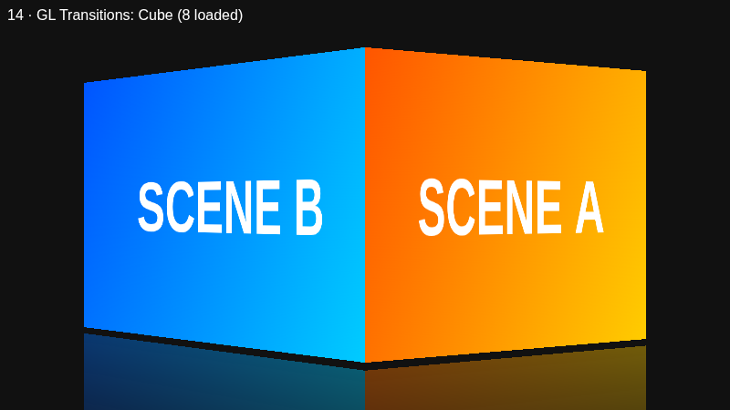
gl-transitions 셰이더 8종(Cube·Swirl·Ripple 등)을 A→B 장면에 순환 적용.
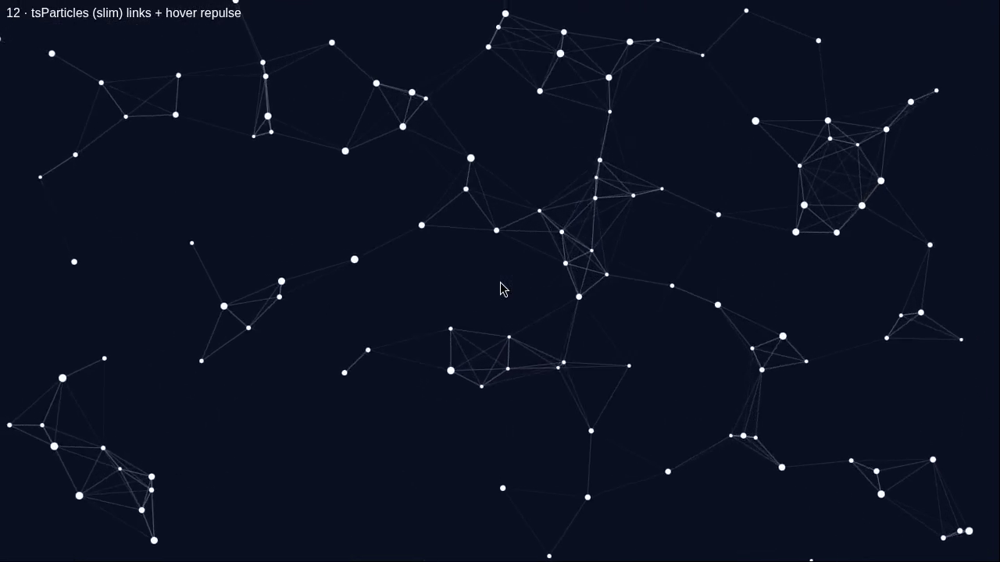
헤드리스 박스라 OBS 대신 Xvfb+ffmpeg x11grab으로 브라우저 화면 6초 녹화.
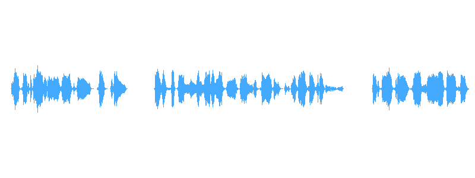
Resemble Chatterbox로 CPU에서 영어 더빙 3문장(9.6초) 생성.
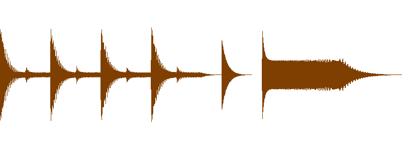

16번 더빙 음성을 small/int8 CPU로 받아쓰기해 SRT 3줄 생성.

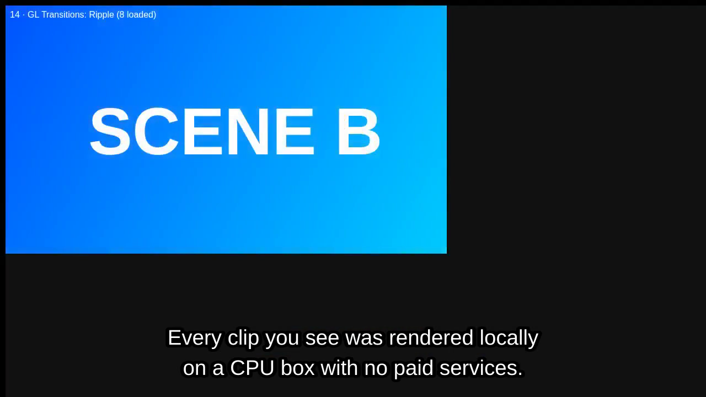